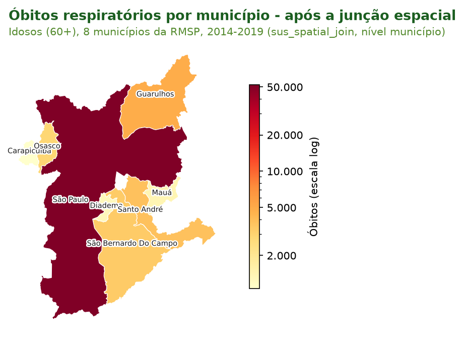
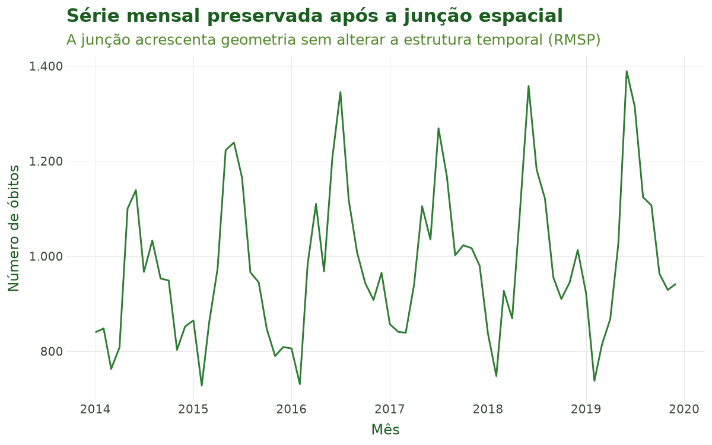
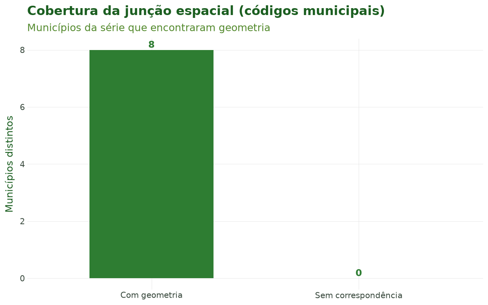

Tutorial 5: Junção Espacial¶
← Voltar para a Trilha do Pipeline
Objetivo¶
Ao final deste tutorial você será capaz de atribuir uma geometria a cada registro de saúde —
ligando a série temporal construída na etapa anterior às unidades geográficas oficiais do
Brasil (municípios e estados) — com sus_spatial_join(), e de integrar dados ambientais em
grade ao pipeline de saúde com sus_grid_join().
A junção espacial é a quinta etapa do pipeline do climasus4py. Ela transforma uma tabela
"comum" (saúde × data × código municipal) em uma tabela com geometria explícita, requisito
para mapear, calcular vizinhança e — fundamental no caso condutor — cruzar com indicadores
socioeconômicos (Tutorial 6) e com clima em grade (Tutorial 8).
Contexto científico¶
Estudos de clima e saúde são, por natureza, espaciais: a exposição (temperatura, poluição) e o desfecho (óbitos, internações) ocorrem em lugares concretos. Ligar o dado de saúde à sua unidade geográfica permite mapear desigualdades, controlar confundidores contextuais e definir a unidade de análise. Essa escolha não é neutra: o Problema da Unidade de Área Modificável (MAUP; Openshaw, 1984) mostra que resultados estatísticos podem mudar conforme a escala (município vs. estado) e o particionamento adotados.
No Brasil, as geometrias oficiais vêm do IBGE e são distribuídas pelo projeto geobr
(Pereira et al., 2019). O climasus4py lê essas malhas já preparadas do pacote climasus-data
— baixadas uma vez e guardadas em cache — e cuida da normalização de códigos, um ponto
sensível: o código municipal do IBGE tem 7 dígitos (com dígito verificador), enquanto os
Sistemas de Informação em Saúde costumam gravar 6 dígitos. A função alinha as duas
representações automaticamente. O sistema de referência de coordenadas é o SIRGAS 2000
(EPSG:4674), padrão oficial brasileiro.
Chapéu do geógrafo. Três cuidados atravessam esta etapa: (i) o sistema de referência (use sempre o SIRGAS 2000 de forma consistente); (ii) a diferença entre o código IBGE de 6 e 7 dígitos (resolvida pela função); e (iii) o MAUP — a escala e o recorte escolhidos afetam a inferência, então documente-os.
Caso condutor. Investigamos temperatura e desfechos em idosos (60+) na Região Metropolitana de São Paulo, 2014–2019. Nesta etapa, ligamos a série de óbitos respiratórios (saída do Tutorial 4) aos oito municípios da RMSP, obtendo a tabela espacial que o Tutorial 6 (Socioeconômico) usará.
Dados utilizados¶
| Insumo | Origem | Papel no caso |
|---|---|---|
| Série mensal por faixa etária e município de residência | Tutorial 4 (sus_data_aggregate()) |
Entrada de saúde |
| Geometrias municipais e estaduais | IBGE, via climasus-data |
Polígonos da RMSP e do estado |
| Grade climática (demonstração) | Sintética (o clima real entra no Tutorial 8) | Ilustra sus_grid_join() |
Pipeline completo¶
Os blocos abaixo reproduzem o que o script
tools/tutoriais/tutorial_05_juncao_espacial.py
executa. Comece carregando o pacote e refazendo, a partir do cache, os passos dos tutoriais
anteriores:
import climasus4py as cs
obitos = cs.sus_data_import(system="SIM-DO", uf="SP", year=[2014, 2015, 2016, 2017, 2018, 2019])
obitos_limpo = cs.sus_data_clean_encoding(obitos)
obitos_padr = cs.sus_data_standardize(obitos_limpo, lang="pt")
RMSP = ["São Paulo", "Guarulhos", "São Bernardo do Campo", "Santo André",
"Osasco", "Mauá", "Carapicuíba", "Diadema"]
resp_idosos = cs.sus_filter(obitos_padr, groups="respiratory", age_min=60, city=RMSP)
obitos_vars = cs.sus_data_create_variables(
resp_idosos,
age_breaks=[60, 70, 80, 999],
age_labels=["60-69", "70-79", "80+"],
climate_region="sudeste",
lang="pt",
)
Montar a série de saúde pelo município de residência¶
A série mensal por faixa etária do Tutorial 4, agora contada pelo município onde a pessoa morava. É o município de residência que diz a qual clima o idoso estava exposto — e é ele que mantém a série nos oito municípios da RMSP.
serie = cs.sus_data_aggregate(
obitos_vars,
time_unit="month",
group_by=["faixa_etaria"],
join_col="residencia", # o município onde a pessoa morava
lang="pt",
)
Ligar a série aos municípios com sus_spatial_join()¶
sus_spatial_join() acrescenta a cada linha a geometria do seu município, lida do
climasus-data. O nível padrão é "municipality"; join_col escolhe qual município usar —
aqui, o de residência, o mesmo da série:
caso_espacial = cs.sus_spatial_join(
serie,
geo_level="municipality", # município (padrão)
join_col="residencia", # coluna geográfica usada na junção
lang="pt",
)
A geometria chega como texto WKT na coluna geometry_wkt. Para mapear ou fazer operações
espaciais, converta a tabela em um GeoDataFrame do geopandas:
import geopandas as gpd
tabela = caso_espacial.df()
geometria = gpd.GeoSeries.from_wkt(tabela["geometry_wkt"])
mapa = gpd.GeoDataFrame(tabela, geometry=geometria, crs="EPSG:4674")
Com geo_level="state", cada linha recebe o polígono e o nome do estado do seu município. As
linhas não são somadas: municípios do mesmo estado passam a compartilhar o mesmo polígono.
Integrar dados ambientais em grade com sus_grid_join()¶
sus_grid_join() é a ponte entre o pipeline ambiental (as funções sus_grid_*(), que
produzem tabelas no estágio climate) e o pipeline de saúde. Ela une as duas tabelas por uma
chave espaço-temporal — aqui, o código do município com 7 dígitos (code_muni_7) e a data. O
clima real entra no Tutorial 8; aqui o uso é ilustrativo, com uma grade de temperatura inventada:
import numpy as np
# Grade de demonstração: uma temperatura para cada município e mês da série
grade = tabela[["code_muni_7", "date"]].drop_duplicates()
sorteio = np.random.default_rng(7)
grade["t2m"] = sorteio.normal(21, 4, len(grade)).round(1)
caso_clima = cs.sus_grid_join(
tabela,
grade,
by=["code_muni_7", "date"], # chave espaço-temporal
lang="pt",
)
caso_clima.attrs["sus_meta"]["stage"] # "climate"
Granularidade temporal. Se a saúde for mensal e a grade diária, a junção por date
deixa a maior parte das linhas sem valor de clima. Nesse caso, agregue a grade antes (com
sus_climate_aggregate()) ou, para grades anuais (ex.: PRODES), una só pelo código do
município — o valor anual é repetido em todos os meses.
Ao final desta etapa temos caso_espacial — a série de saúde com geometria, que alimenta o
Tutorial 6.
Características das funções¶
sus_spatial_join()¶
Liga dados de saúde às geometrias oficiais do Brasil (malhas do IBGE distribuídas pelo
climasus-data).
| Argumento | Essencial? | Descrição |
|---|---|---|
rel |
sim | Dados de saúde com uma coluna de código municipal (padronizados, filtrados ou agregados) |
geo_level |
sim | Unidade geográfica: "municipality" (padrão) ou "state" |
join_col |
opcional | Município usado na junção: "residencia", "ocorrencia", "notificacao" ou o nome de uma coluna; sem ele, é detectado (residência primeiro) |
simplified |
opcional | True (padrão) usa a malha simplificada, mais leve; False, a malha completa |
spatial_path |
opcional | Caminho para um arquivo Parquet de geometrias próprio (colunas code_muni, name e geometry_wkt) |
lang |
opcional | Idioma dos nomes de estado e região ("pt", "en", "es") |
Retorno: os dados com as colunas originais mais spatial_name (nome do município ou do
estado), geometry_wkt (a geometria em texto WKT — POLYGON ou MULTIPOLYGON),
code_muni_7, code_state, abbrev_state, name_state, code_region e name_region, e o
estágio spatial registrado.
Normalização de códigos. Aceita códigos municipais de 6 ou 7 dígitos (o dígito
verificador é tratado automaticamente). A junção mantém todas as linhas de saúde: códigos sem
geometria correspondente ficam com geometry_wkt vazia — por isso vale conferir a cobertura
(Figura 3).
sus_grid_join()¶
Une a saída de qualquer sus_grid_*() (no estágio climate) a uma tabela de saúde — agregada ou
já com geometria — produzindo uma tabela no estágio climate.
| Argumento | Essencial? | Descrição |
|---|---|---|
health_data |
sim | Dados de saúde com as colunas de by |
grid_data |
sim | Saída de uma função sus_grid_*(), com as colunas de by e ao menos uma variável ambiental |
by |
opcional | Chave de junção; padrão ["code_muni", "date"]. Use só o código do município para grades anuais |
type_out |
opcional | Sobrescreve o tipo do resultado; sem ele, herda o da grade |
lang / verbose |
opcional | Idioma e mensagens |
Retorno: um DataFrame com as colunas de saúde mais as variáveis ambientais e o estágio
climate registrado em attrs["sus_meta"]. A junção mantém todas as linhas de saúde: as que não
têm grade correspondente recebem valor vazio (NaN). A função avisa sobre colisão de nomes de
coluna e sobre descasamento de granularidade temporal.
Resultados ilustrados¶

Figura 1. Mapa coroplético dos óbitos respiratórios de idosos por município de residência após a junção espacial (RMSP, 2014–2019). Cada polígono carrega agora o desfecho de saúde — base para mapear desigualdades e cruzar com indicadores contextuais. A escala de cores é logarítmica: o município de São Paulo concentra a maior parte dos óbitos.

Figura 2. Série mensal preservada após a junção. A junção espacial adiciona geometria sem alterar a estrutura temporal: a dimensão tempo segue intacta para a modelagem (Tutorial 9).

Figura 3. Diagnóstico de cobertura da junção: quantos municípios da série encontraram geometria. Verificar essa taxa é um controle de qualidade essencial — um código sem geometria correspondente ficaria de fora de qualquer mapa ou análise espacial. No caso condutor, os oito municípios encontraram geometria.
Tabela 1. Resumo da junção espacial (nível, sistema de referência, linhas antes e depois, geometria).
| Item | Valor |
|---|---|
| Função | sus_spatial_join() |
Nível (geo_level) |
municipality (município) |
Coluna de junção (join_col) |
residencia (codigo_municipio_residencia) |
| Sistema de referência | SIRGAS 2000 (EPSG:4674), o do IBGE |
| Linhas antes da junção | 1.720 |
| Linhas depois da junção | 1.720 |
| Municípios distintos | 8 |
| Tipo de geometria | MULTIPOLYGON, POLYGON (texto WKT, coluna geometry_wkt) |
Tabela 2. Amostra das colunas-chave da tabela resultante (geometria omitida).
| code_muni_7 | spatial_name | abbrev_state | date | faixa_etaria | n_obitos |
|---|---|---|---|---|---|
| 3510609 | Carapicuíba | SP | 2014-01-01 | 60-69 | 2 |
| 3510609 | Carapicuíba | SP | 2014-01-01 | 70-79 | 2 |
| 3510609 | Carapicuíba | SP | 2014-01-01 | 80+ | 4 |
| 3513801 | Diadema | SP | 2014-01-01 | 60-69 | 2 |
| 3513801 | Diadema | SP | 2014-01-01 | 70-79 | 9 |
| 3513801 | Diadema | SP | 2014-01-01 | 80+ | 6 |
| 3518800 | Guarulhos | SP | 2014-01-01 | 60-69 | 14 |
| 3518800 | Guarulhos | SP | 2014-01-01 | 70-79 | 19 |
Referências¶
- Openshaw, S. (1984). The Modifiable Areal Unit Problem. CATMOG 38. Norwich: Geo Books.
- Pereira, R. H. M., Gonçalves, C. N., et al. (2019). geobr: Loads Shapefiles of Official Spatial Data Sets of Brazil. GitHub: https://github.com/ipeaGIT/geobr.
- Pereira, R. H. M., & Barbosa, R. J. (2023). censobr: Download Data from Brazil's Population Census. R package v0.4.0. DOI: 10.32614/CRAN.package.censobr.
- IBGE — Instituto Brasileiro de Geografia e Estatística. Sistema de referência geocêntrico SIRGAS 2000.